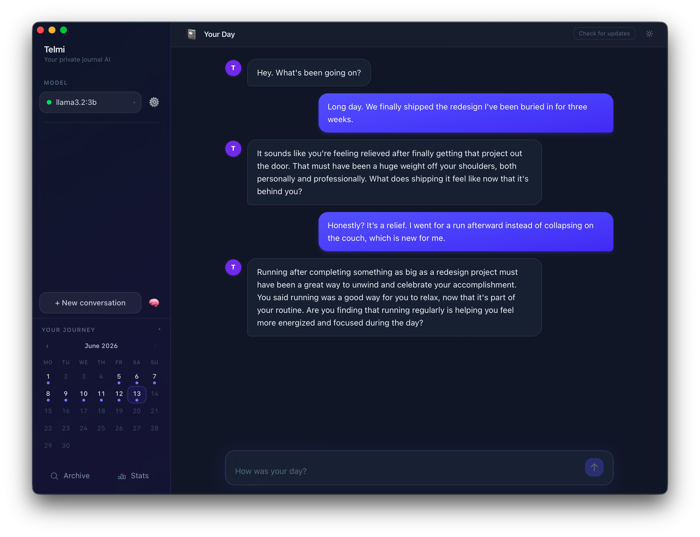
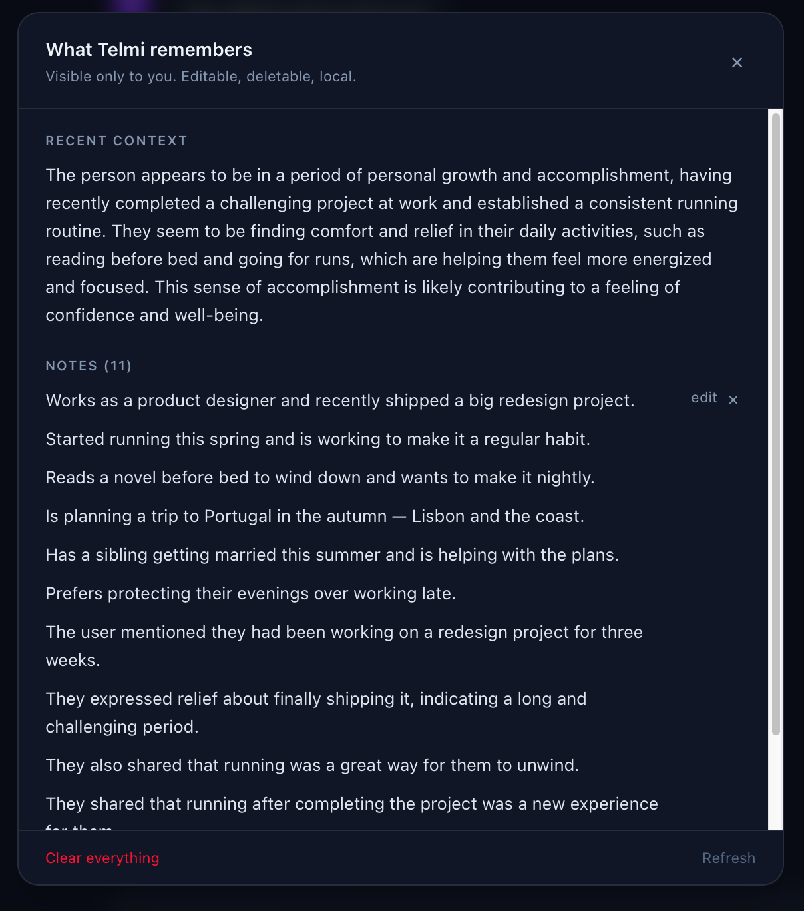
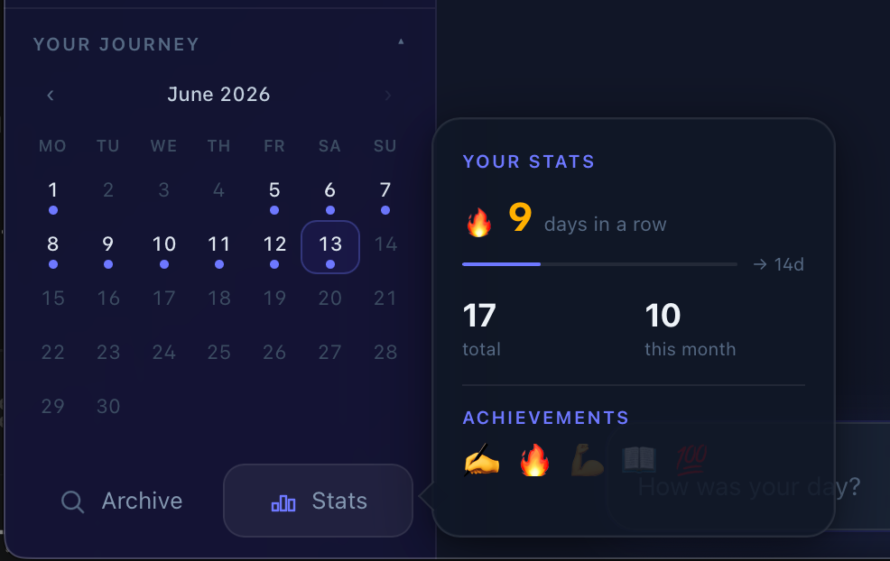
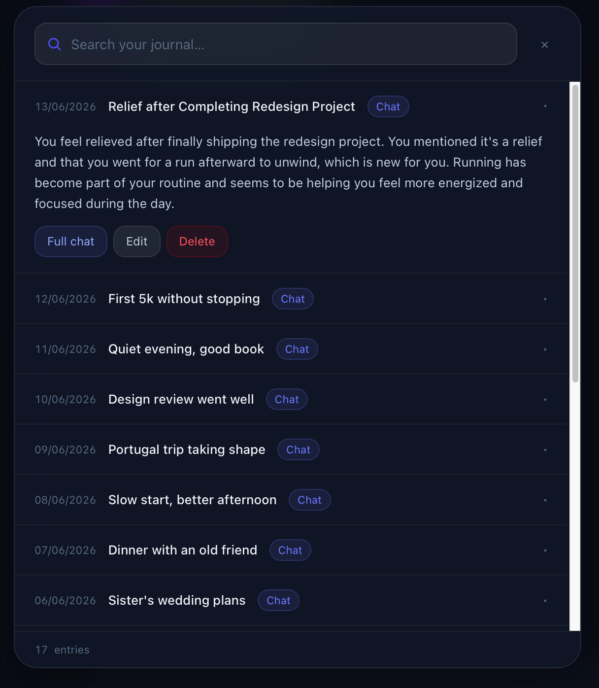

Your day, in one place
No save button, no friction. Open the app and talk. Telmi auto-saves every conversation.

A fully local AI companion for your Mac. Say whatever's on your mind — Telmi remembers what matters, and never sends a single word to a server.
Open Telmi and just start talking. One calm, focused conversation.
Telmi replies briefly and naturally, then quietly keeps notes on the things worth remembering. Next time you open it, it already knows you.
No save button, no friction. Open the app and talk. Telmi auto-saves every conversation.

A built-in panel lets you read, edit, or delete every note Telmi keeps. Nothing is hidden.

A calendar of every day you've talked, your streaks, and monthly stats — built into the sidebar.

Browse and full-text or semantic-search every past conversation, instantly.

Everything runs on your Mac through Ollama. Not a single word ever leaves your machine.
No account, no API key, no usage limits. You own the models, and you own the data.
No GPU, no special hardware. It works on the Mac you already have.
Download the .dmg, drag Telmi to Applications, install Ollama. That's it.
macOS only · Apple Silicon (M1 and later)